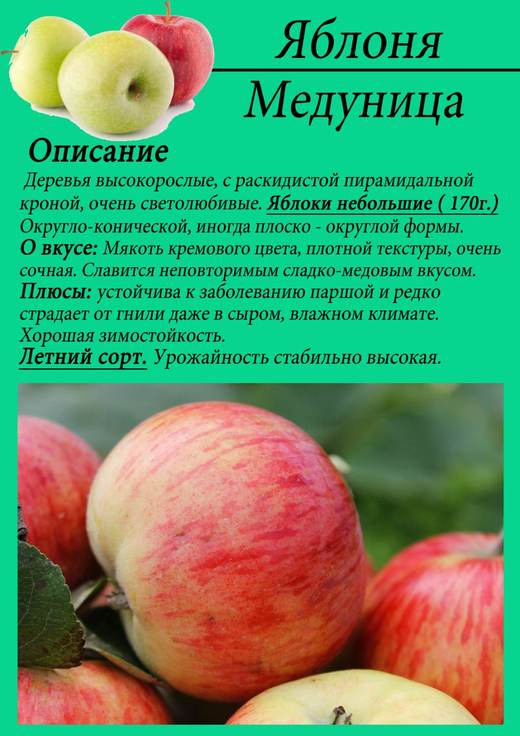
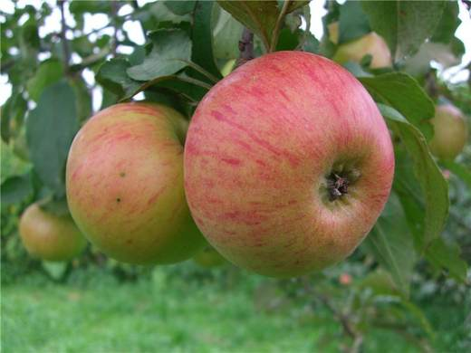
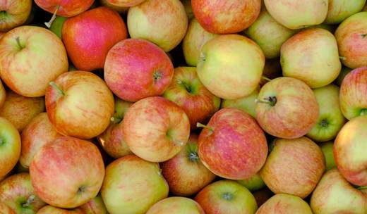
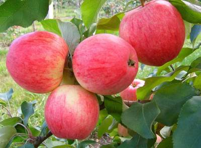

Сладкая как мёд ещё до полного созревания — сорт, который дети объедают прямо с дерева в конце августа.




Клик по фото — полный размер. Фотографии иллюстрируют сорт/вид; собраны из открытых источников (питомники, сортовые каталоги, Википедия).
Медуница — сорт С.И. Исаева (МГУ), полученный от скрещивания Уэлси и Коричного полосатого. Плоды средней величины, жёлто-зелёные с карминовыми полосками на большей части плода. Мякоть плотная, сочная, кремовая — очень сладкая, медово-пряного вкуса с особенным ароматом, за который сорт и получил имя.
Уникальность Медуницы: она сладка даже недозрелой — в северные и дождливые сезоны, когда другие сорта кислят, она остаётся десертной. Зимостойкость очень высокая (успешно растёт севернее средней полосы), устойчивость к парше высокая, скороплодность хорошая (4–5 год).
| Зимостойкость | очень высокая |
| Устойчивость к парше | высокая — можно не «химичить» |
| Самоплодность | частичная — опылители желательны |
| Лёжкость | невысокая: ~1 месяц, дальше переработка |
| Урожайность | хорошая, регулярная в молодом возрасте; с возрастом умеренно периодична |
Советы собраны из отзывов садоводов на форумах и из практики питомников; цитаты приведены по источникам ниже.